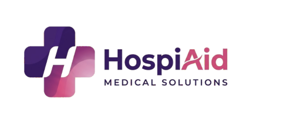
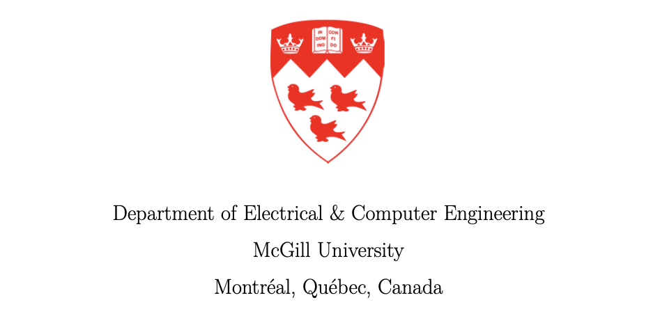
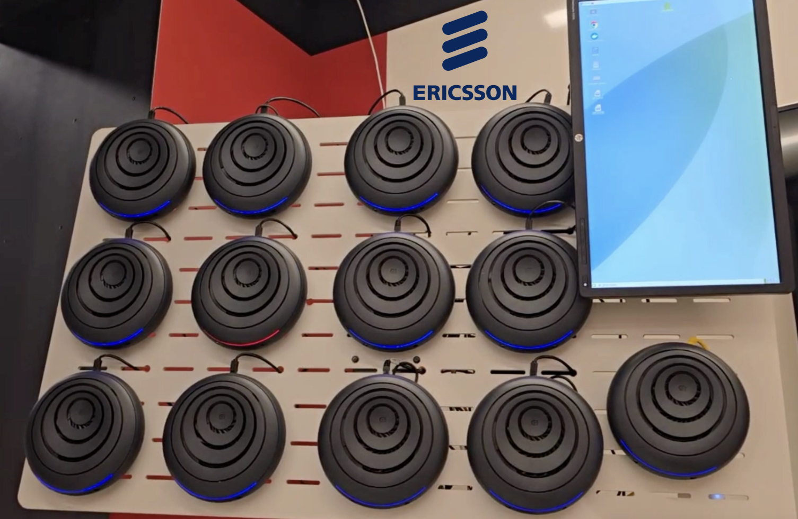
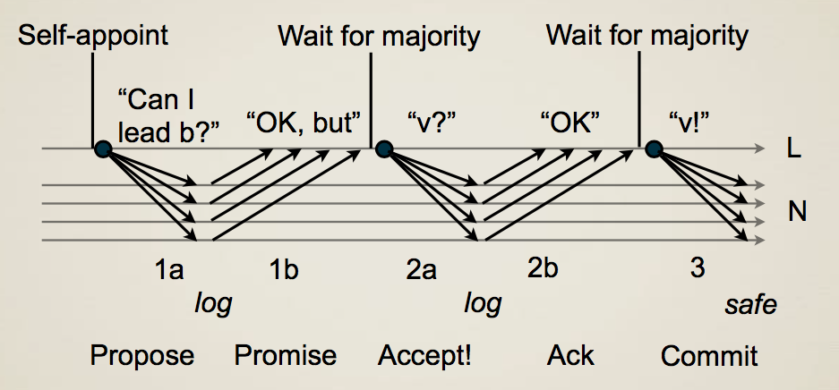
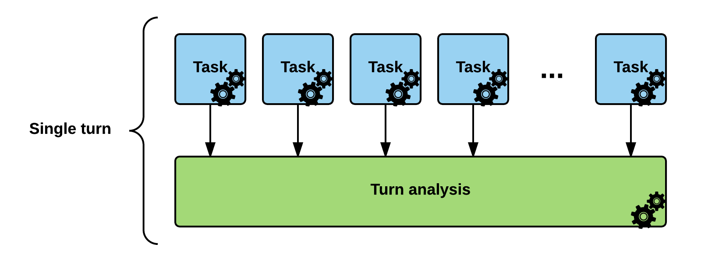
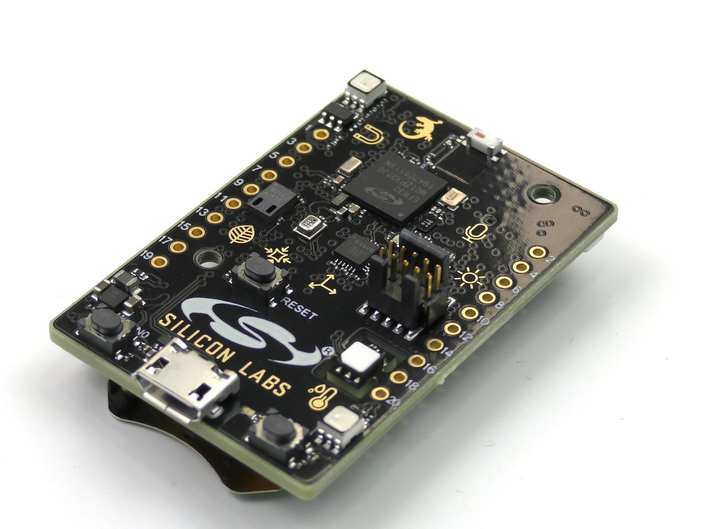
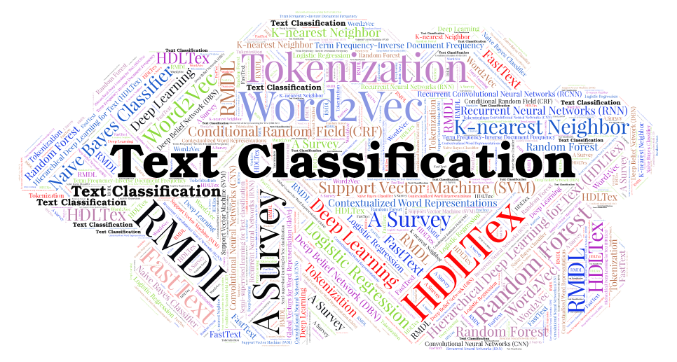
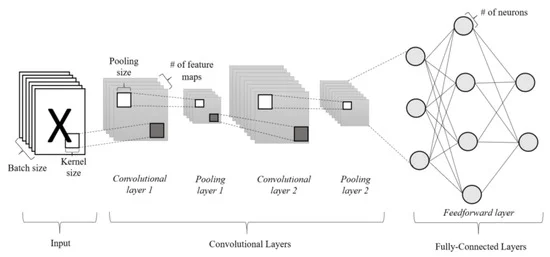
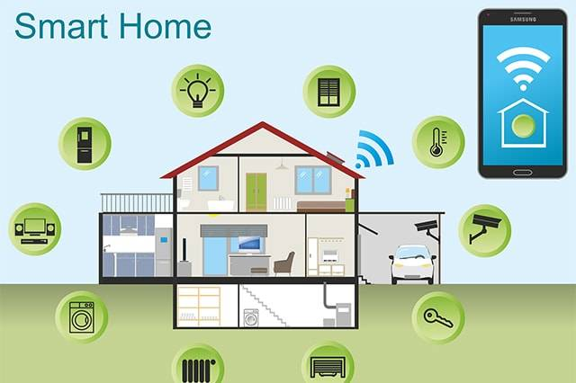

Featured · Live

Production website · Laravel, PHP
Hospiaid: medical equipment and hospital setup website
Freelance project: designed, built, deployed and maintain the public website and admin panel at hospiaid.com. Product catalogue, gallery, certificates, testimonials, and enquiry, contact and review forms with owner emails and consent handling. Built with secure image uploads and a hardened, scripted deployment, tested with an automated suite, and run in Docker locally.
LaravelPHP 8.3MySQL 8Bootstrap 5ViteDockerPHPUnit
Featured

Research · C++
Optimizing collaborative UAV networks for data efficiency in IoT (Thesis)
Multi-hop routing for collaborative UAV networks: an exact ILP solved with IBM CPLEX and a modified Dijkstra heuristic in C++ that is at least 99% faster. The problem is proven NP-hard by reduction from Steiner Tree. Published at IEEE ICC 2025.
C++20IBM CPLEXILPDijkstra
Featured

Ericsson · Python
Distributed Machine Learning
PyTorch DDP on Gloo, Django orchestration, hardware telemetry, Kafka/Redis streaming, and edge deployment work. Includes checkpoint recovery, learning rate scaling by world size and I2C telemetry on each node.
PyTorch DDPDjangoReactKafkaRedis
Featured
Hackathon · Java, Python
AI Medical App (Parentra)
Pediatric IoT healthcare prototype built in a 24 hour hackathon (TECHNATION Canada and TELUS, "AI at the Edge of Innovation"): BLE sensors, an Android app, Firebase, and a FastAPI service that matches symptoms to diseases using embeddings in ChromaDB.
AndroidFastAPIChromaDBBLE 5.2Firebase
Featured
LORIS · PHP, SQL
LORIS account-request spam filter
Design and implementation for blocking abusive account requests in LORIS: a dedicated account_requests staging table and a filter backend that silently rejects repeated requests from disposable email domains. Four design issues and a related reset-workflow fix.
PHPMySQLSchema design

Distributed · Java
Paxos Distributed Orders
Team project: Paxos based total-order broadcast with majority quorum, failure injection hooks and JUnit correctness tests. Explicit proposer, acceptor and sorter roles with ballot tracking and randomized backoff.
JavaPaxosJUnit

Distributed · Java
Distributed Task Execution Framework
Team project: master-worker execution system with Apache ZooKeeper leader election, watchers, task reassignment and load balancing. Middleware supports both TCP/IP sockets and Java RMI.
JavaZooKeeperRMI
Desktop · JavaFX
Stock Portfolio Manager
Desktop trading platform with JavaFX MVC, PostgreSQL/JDBC, Docker, live market data, and non-blocking UI operations.
JavaJavaFXPostgreSQLDocker
IoT · Android Java
Health Monitoring System
Android IoT app with BLE sensors, Firebase Firestore, real-time health streaming, and role-based access.
AndroidBLEFirestore

Embedded · C
IoT Firmware for Health Monitoring System
Embedded C firmware for the Silicon Labs EFR32BG22 with a BLE 5.2 GATT service, I2C temperature and SPI motion sensors, and over the air firmware updates.
CEFR32BG22BLE GATTOTA DFU
Jaipur Medical System · Java
Document Management & Collaboration Platform
Spring Boot REST microservices with PostgreSQL and JDBC, Elasticsearch full-text search, MinIO object storage, document versioning, JWT authentication with role based access, a React frontend and Docker Compose deployment.
Spring BootPostgreSQLElasticsearchMinIOReact
Open source · Python
HarmoniCA Data Harmonizer
Feature work in a Streamlit tool that maps questionnaire items to symptom dimensions: item entry and CSV upload, inventory matching, duplicate review, a progress bar and a downloadable harmonized CSV, with validation rules and unit tests.
PythonStreamlitpytest
AI · Python, TypeScript
AI SaaS Prototype
Full-stack prototype built for a job assessment: Next.js and React frontend, FastAPI and SQLModel backend, LangChain with OpenAI, Groq and a mock adapter. A working vertical slice, not a production system.
Next.jsFastAPILangChainSQLModel

ML · Python
Sub-Reddit Text Classification using Advanced Machine Learning Techniques
Text classification pipeline with preprocessing, feature engineering, model comparison, and performance analysis.
PythonNLPFeature engineering

Deep learning · Python
Image Classification of Japanese Numerals with Deep CNN Models
PyTorch image classification work exploring CNN architectures, data loaders, training loops, and validation metrics. Compared ResNet18, ResNet34, VGG16 and VGG19 with k-fold cross-validation; best test accuracy 93.8% with VGG19.
PyTorchResNetVGG
Mobile · Java
Android Step Tracker
Java Android activity tracker using device sensors, background services, and local history storage. Peak detection on the linear accelerometer, live steps-per-minute chart, goals and notifications.
AndroidSensorsBackground services
Algorithms · Java, Python
LetsLeetCode
Algorithm and data-structure problem solutions kept one folder per problem, such as Two Sum, Add Two Numbers, Longest Substring Without Repeating Characters, 3Sum and sorting techniques.
JavaPythonDSA

IoT · BITS Pilani capstone
Connected Configurable Smart Home (CCSH)
Protocol specification and backend for a smart home where devices advertise their capabilities over HTTP and MQTT, with device registration, discovery and AWS DynamoDB and S3 integration.
MQTTHTTPAWSArduino
Embedded C · BIT Mesra
Real-Time Protection Circuit for Induction Motors against Single Phasing
Embedded control project for real-time motor protection, fault detection, and hardware validation.
Embedded CMicrocontrollers